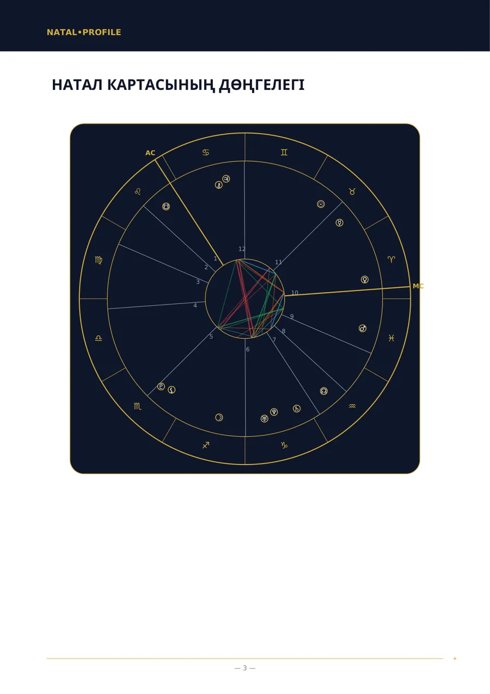
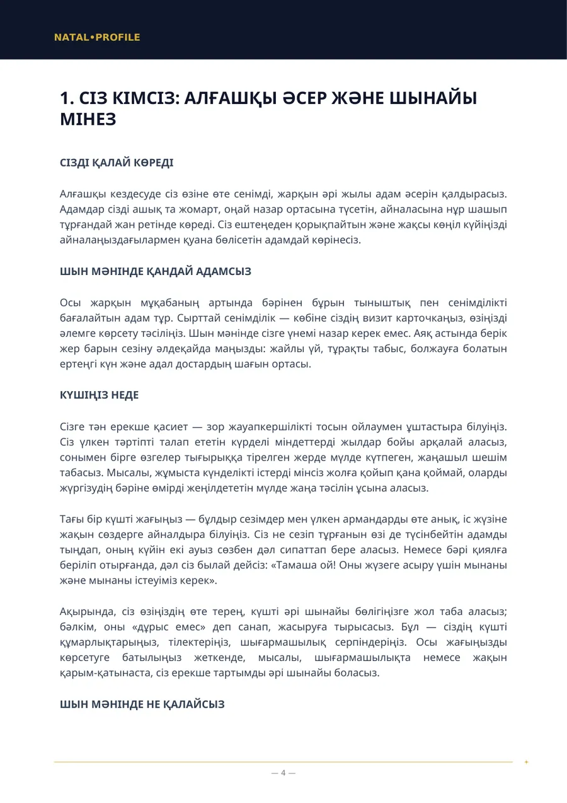
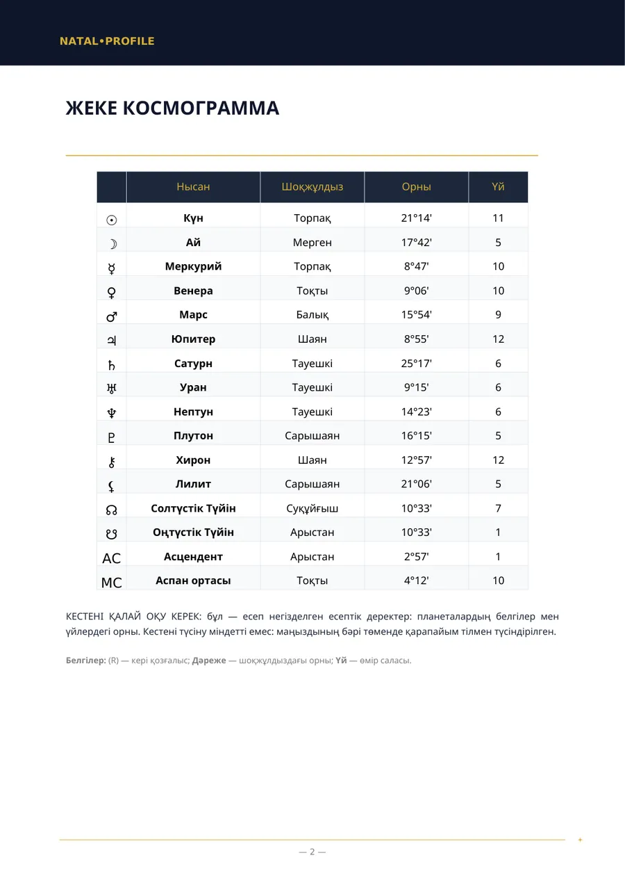
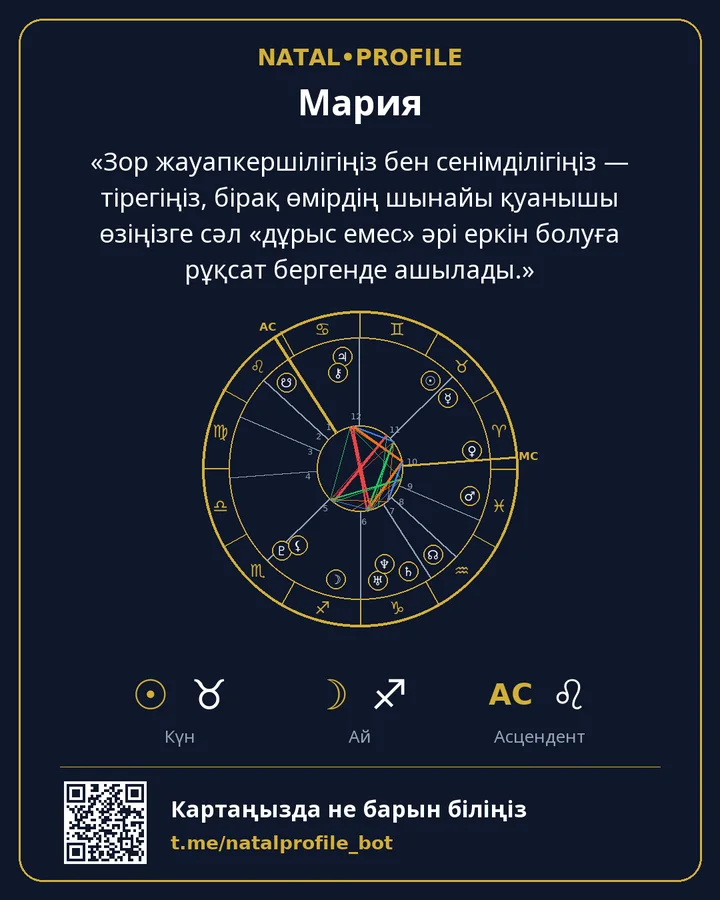

Балалар Картасы — балаңызды түсінуге арналған нұсқаулық
Балаңызға тыныштық үшін не қажет және оны неде қолдау керек.
- 250 ⭐ Telegram Stars
- 7 тарау
Ішінде не бар
- Балаңыз тыныштану үшін оған не қажет
- Энергия және белсенділік
- Мінезі мен қызығушылықтары
- Бала қалай ойланады және үйренеді
- Талғамы мен шығармашылығы
- Ережелер мен шекаралар
- Балаңызды қай жерде қолдау керек
Кімге лайық
- Баласын жақсырақ түсінгісі келетін ата-аналар.
- Баланың ережелер мен тыйымдарға қалай жауап беретіні түсініксіз болғанда.
- Кез келген жастағы балаға лайық.
Нені енгізесіз
Баланың есімі, жынысы, туған күні, уақыты және қаласы.
Үлгі беттер
«Натал карта» есебінің нақты беттері. Бұл үлгі: туған деректер ойдан алынған.




Басқа есептер
Натал Картасы (Толық Талдау)
Туған күн, уақыт және орын бойынша мінезіңіздің толық талдауы.
250 ⭐9 тарау · Толығырақ →
Натал Картасы (Негізгі Талдау)
Туған уақыт белгісіз болғанда мінез талдауы.
150 ⭐6 тарау · Толығырақ →
Үйлесімділік Талдауы (Толық)
Екі адам: сіздерді не жақындатты, қай жерде келіспейсіздер және бір-біріңізге не бересіздер.
250 ⭐6 тарау · Толығырақ →
Үйлесімділік Талдауы (Негізгі)
Туған уақыт белгісіз болғанда мінездердің үйлесімділігі.
150 ⭐5 тарау · Толығырақ →